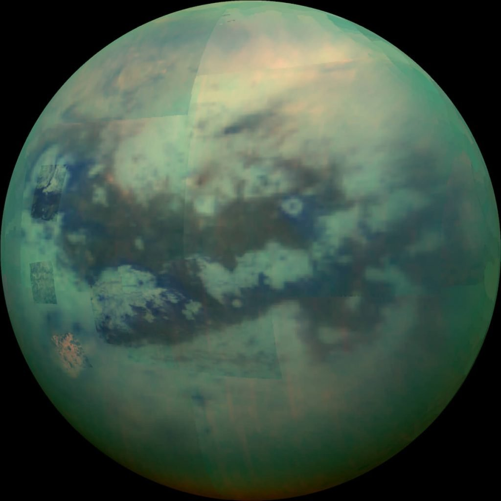
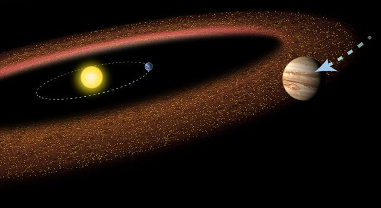
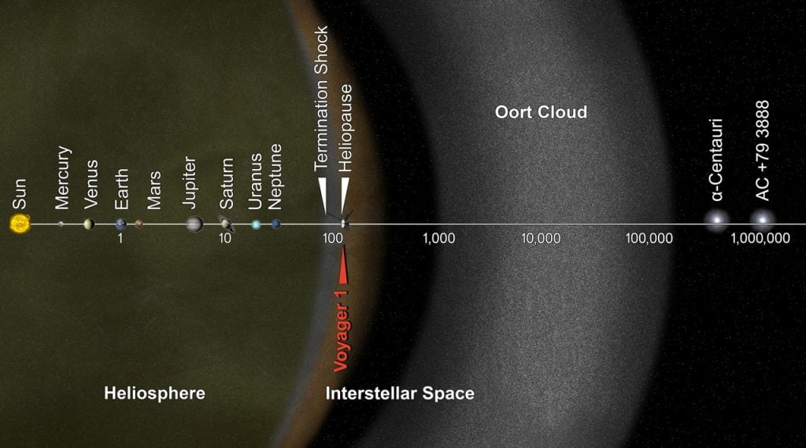

နေအဖွဲ့ အစည်းမှာ အလယ် ဗဟိုမှာ ရှိတဲ့ နေနဲ့ သူ့ကို ပတ်နေတဲ့ အရာ အားလုံး ပါဝင်ပါတယ်။ အလယ် ဗဟိုချက်မှာ ရှိနေတဲ့ နေကို ဗဟိုပြုပြီး ဂြိုဟ် (Planet) တွေ၊ ဂြိုဟ်သိမ် (Asteroid) တွေ နဲ့ ကြယ်တံခွန် (Comets) တွေနဲ့ အခြား အရာ ဝတ္ထုတွေက ကပတ်ပြီး လည်ပတ်နေတာ ဖြစ်ပါတယ်။
နေ အဖွဲ့အစည်းရဲ့ သက်တမ်းဟာ အခုဆို နှစ်သန်းပေါင်း ၄,၆၀၀ လောက် ရှိပါပြီ။ မူလက ဓါတ်ငွေ့ တိမ်တိုက်ကြီး ကနေ ဆွဲငင်အားကြောင့် သိပ်သိပ်သည်သည်း စုမိပြီး နေနဲ့ သူ့ကို ပတ်နေတဲ့ ဂြိုဟ်တွေ ဖြစ်လာတာ ဖြစ်ပါတယ်။ ဒီ ဓါတ်ငွေ့ တိမ််တိုက်ကြီးရဲ့ ဒြပ်ထု အများစုကတော့ ခလယ်မှာ စုပြီး နေ ဖြစ်လာ ပါတယ်။ ကျန်တဲ့ ဓါတ်ငွေ့ တွေက ဓါတ်ပြား တစ်ချပ်လို ပြားသွားပြီး ဒီ ဓါတ်ပြားချပ်ပေါ်မှာ ဟိုနားနည်းနည်း ဒီနား နည်းနည်း စုမိ သွားတဲ့ နေရာလေးတွေမှာ ဂြိုဟ်တွေ ဖြစ်လာတာပါ။ နေတင် မကဘူး အခြား ကြယ်တွေ အားလုံးလဲ ဒီ နည်းအတိုင်းပဲ ဖြစ်လာကြတယ်လို့ ယူဆရ ပါတယ်။
ကျွန်တော်တို့ နေဟာ တကယ်တော့ ကြယ် တစင်းပါပဲ။ ကြယ်မှ သိပ်ပြီး ထူးခြားမှု မရှိတဲ့ အသေးစား ကြယ်လေး တစ်လုံးပဲ ဖြစ်ပါတယ်။ နေအဖွဲ့ အစည်းရဲ့ ဒြပ်ထု စုစုပေါင်းရဲ့ ၉၉% ဟာ နေမှာ သွားစု နေတာပါ။ ဒီတော့ နေရဲ့ ဆွဲအားကလဲ အတော်လေး ကြီးပါတယ်။ (ဆွဲငင်အားက ဒြပ်ထုနဲ့ တိုက်ရိုက် အချိုး ကျပါတယ်။ ဒါ့ကြောင့် ဒြပ်ထု ကြီးလေလေ ဆွဲငင်အား များလေလေပါ။) နေရဲ့ ဆွဲငင်အားကြောင့် အခြား ဂြိုဟ်တွေ၊ ဂြိုဟ်သိမ်တွေ၊ ကြယ်တံခွန် တွေနဲ့ အခြား အရာ ဝတ္ထုတွေ အားလုံးဟာ နေရဲ့ ဆွဲအားက ရုန်းမထွက် နိုင်ပဲ နေကို ပတ်နေရတာ ဖြစ်ပါတယ်။
နေရဲ့ ဒြပ်ထု အများစုက ဟိုက်ဒြိုဂျင် (H2) ဓါတ်ငွေ့တွေ ဖြစ်ပါတယ်။ အခြား ပါဝင်တဲ့ ဒြပ်စင်တွေ ကတော့ ဟီလီယံ အနည်းအကျဉ်းနဲ့ အခြား ဒြပ်စင်တွေ ပါဝင်ပါတယ်။
နေကို ပတ်နေတဲ့ ဂြိုဟ်ကြီး ၈ လုံး ရှိပါတယ်။ အနီးဆုံး ကနေ အဝေးဆုံးကို ဆိုရင်
- ဗုဒ္ဓဟူးဂြိုဟ် (မာကျူရီ / Mercury)
- သောကြာဂြိုဟ် (ဗီးနပ်စ် / Venus)
- ကမ္ဘာ (Earth)
- အင်္ဂါဂြိုဟ် (မားစ် / Mars)
- ကြာသပတေးဂြိုဟ် (ဂျူပီတာ / Jupiter)
- စနေဂြိုဟ် (စေတန် / Saturn)
- ယူရေးနပ်စ် ဂြိုဟ် (Uranus)
- နက်ပ်ကျွန်းဂြိုဟ် (Neptune)
ဒီအထဲက နေနဲ့ အနီးဆုံး ဖြစ်တဲ့ မာကျူရီ၊ ဗီးနပ်စ်၊ ကမ္ဘာ နဲ့ မားစ် ဂြိုဟ် တို့ဟာ ကျောက်ဆိုင် ကျောက်သား နဲ့ သတ္တု တွေနဲ့ ဖွဲ့စည်းထားတဲ့ ဂြိုဟ်တွေ ဖြစ်ကြပါတယ်။ သူတို့ကို အတွင်းဂြိုဟ်များ (Inner Planets) လို့လဲ ခေါ်ကြပါတယ်။
ကျန်တဲ့ ဂျူပီတာ၊ စေတန်၊ ယူရေးနပ်စ် နဲ့ နက်ပ်ကျွန်း ဂြိုဟ်တွေကတော့ ဓါတ်ငွေ့လုံး ကြီးတွေ ဖြစ်ကြပါတယ်။ သူတို့ကို အပြင်ဂြိုဟ်များ (Outer Planets) လို့လဲ ခေါ်ကြပါတယ်။ နေုာက်ပြီး ဧရာမ ဓါတ်ငွေ့ လုံးကြီးများ (Gas Giants) လို့လဲ ခေါ်ပါ သေးတယ်။
နေအဖွဲ့ အစည်းထဲက ဂြိုဟ်ရံ လတွေထဲမှာ စနေဂြိုဟ်ရဲ့ ဂြိုဟ်ရံလ တစ်ခုဖြစ်တဲ့ တိုက်တန် (Titan) လ တစ်ခုမှာပဲ လေထု သေခြာ ရှိပါတယ်။ ကျွန်တော်တို့ ကမ္ဘာရဲ့ လ အပါအဝင် အချို့ လတွေမှာ လေထု ရှိတယ်လို့ ဆိုပေမယ့် ပါးပါးလေးမှာ တကယ့် ပါးပါးလေးပဲ ရှိတာပါ။ ဒါပေမယ့် တိုက်တန် လရဲ့ လေထုကတော့ ကမ္ဘာ့ လေထုထက်တောင်မှ သိပ်သည်းဆ များတယ်လို့ ဆိုပါတယ်။ (ဒီအကြောင်း နောက် ဆောင်းပါးတွေမှာ ပါပါမယ်)။

ဒီ နက်ပ်ကျွန်းဂြိုဟ် ပတ်လမ်းရဲ့ အပြင်ဖက်က ဂြိုဟ်သိမ် ဂြုဟ်မွှားတွေ ရှိတဲ့ ရပ်ဝန်းမှာ ပလူတို ဂြိုဟ်သိမ် ရှိတာပါ။ (အရင်ကတော့ ဂြိုဟ်ပါပဲ။ နောက်မှ ရာထူးကျသွားပြီး ဂြိုဟ်သိမ် ဘဝ ရောက်သွားတာ)။ ဒါ့အပြင် အခြား အရာ ဝတ္ထု အသေး အမွှား လေးတွေလဲ အမြောက်အများ ရှိကြပါ သေးတယ်။ ကြယ်တံခွန်တွေ နဲ့ ဖုန်မှုန့် တွေလဲ နေ အဖွဲ့အစည်း ထဲမှာ ပါဝင် နေပါတယ်။
နေကို ကမ္ဘာနဲ့ အခြား ဂြိုဟ်တွေက ပတ်နေတယ်လို့ ပထမဆုံး စပြောခဲ့တာ ကော့ပါးနိကပ်စ် (Copernicus) မဟုတ်ပါဘူး။ ရှေး ဂရိခေတ် ဘီစီ နှစ် ရာစုလောက်က ပေါ်ပေါက်ခဲ့တဲ့ နက္ခတ် ပညာရှင် အရစ်တာခပ်စ် (Aristarchus of Samos) က နေကို ဗဟိုပြုပြီး ကျန်တဲ့ ဂြိုဟ်တွေက လှည့်ပတ် နေတယ် ဆိုတာကို စပြီး ပြောခဲ့ပါတယ်။ ဒါပေမယ့် အရစ်စတိုတယ်ရဲ့ ကမ္ဘာ ဗဟိုပြု သီအိုရီကို မတွန်းလှန် နိုင်ခဲ့ပါဘူး။
နေ အဖွဲ့အစည်းထဲက အကြီးဆုံး လ ဟာ ဂယ်နီမိဒ် လ ဖြစ်ပြီး ဂျူပီတာ ဂြိဟ်ကို ပတ်နေတဲ့ လဖြစ်ပါတယ်။ ဒီ လရဲ့ လေထုထဲမှာ ရေငွေ့တွေ ရှာဖွေ တွေ့ရှိ ထားပါတယ်။
ကျွန်တော်တို့ရဲ့ နေ အဖွဲ့အစည်းနဲ့ အလားတူ တဲ့ ကြယ်တွေနဲ့ သူတို့ကို ပတ်နေတဲ့ ဂြိုဟ်ရံ လတွေကို ရှာဖွေ တွေ့ရှိ ထားပါတယ်။ ကျွန်တော်တို့ရဲ့ မစ်ကီးဝေး ထဲမှာကို ဂြိုဟ်ရံ တွေ ရှိတဲ့ ကြယ်ပေါင်း သန်း ထောင်ချီ ရှိမယ်လို့ ခန့်မှန်းပါတယ်။
ဖြစ်ပေါ်လာပုံ
နေ အဖွဲ့အစည်းဟာ လွန်ခဲ့တဲ့ နှစ်သန်း ၄,၆၀၀ လောက်က စတင် ဖြစ်ပေါ် လာတယ်လို့ ယူဆကြပါတယ်။ ဓါတ်ငွေ့ တိမ်တိုက်ကြီးဟာ ဆွဲငင်အားကြောင့် သိပ်သိပ် သည်းသည်း စုစည်းမိပြီး နေနဲ့ ဂြိုဟ်တွေ ဖြစ်လာတယ်လို့ ယူဆရပါတယ်။ဒီလို သိပ်သည်းမိတဲ့ ဓါတ်ငွေ့ အများစုက အလယ် ဗဟိုမှာ စုပြီး နေ ဖြစ်လာပါတယ်။ ကျန်တာတွေက ဂြိုဟ်မဖြစ်မှီ ဖုန်မှုန့်တွေ အနေနဲ့ စုစည်းမိ သွားပါတယ်။ ဒီ ဖုန်မှုန့် တွေကမှ စုစည်း သိပ်သည်းပြီး ဂြိုဟ်တွေ ဖြစ်လာတာ ဖြစ်ပါတယ်။
နေ အဖွဲ့အစည်း စတင် ဖြစ်လာချိန်ကစလို့ ယခုအထိ အပြောင်းအလဲ ပေါင်းများစွာကို ဖြတ်ကျော် ခဲ့ရပါတယ်။ နေကို ပတ်နေတဲ့ ဓါတ်ငွေ့နဲ့ ဖုန်မှုန့် တိမ်တိုက်တွေက တဆင့် ဂြိုဟ်တွေ ဖြစ်လာသလို ဒီ ဂြိုဟ်တွေကို ပတ်နေတဲ့ ဓါတ်ငွေ့ ဖုန်မှုန့် တွေကြောင့် လ တွေ ဖြစ်လာတာပါ။ အချို့ လတွေ ကျတော့ အနားက ဖြတ်ပျံသွားတဲ့ ဂြိုဟ်ပျံ၊ ဥက္ကာပျံ တွေကို လှမ်း ဆွဲဖမ်း ထားလိုက်ရာက ဖြစ်လာကြတာပါ။ ကျွန်တော်တို့ရဲ့ လ ကျတော့ ကမ္ဘာကို ဥက္ကာတုံးကြီး ဝင်တိုက်မိ ရာက ပဲ့ထွက်သွားပြီး ဖြစ်လာတာလို့ ဆိုပါတယ်။
နေ အဖွဲ့အစည်း ထဲမှာ ဖြစ်ပေါ်လာတဲ့ အရာဝတ္ထုတွေ (ဂြိုဟ်၊ ဂြိုဟ်သိမ်၊ လ၊ ဥက္ကာပျံ၊ ကြယ်တံခွန်) အစ ရှိတာတွေဟာ အလွန်လျှင်မြန်တဲ့ အလျှင်နဲ့ လှုပ်ရှားနေ ကြတာမို့ အချင်းချင်း မကြာခန တိုက်မိတတ်ကြပါတယ်။ နောက်ပြီး နေအဖွဲ့အစည်းရဲ့ ဂြိုဟ်တွေကလဲ တစ်ခုနဲ့ တစ်ခု နေရာ မကြာခန ရွှေ့ပြောင်း တတ်ကြ ပါသေးတယ်။ ဒီ ဂြိုဟ်တွေ နေရာ ရွှေ့ပြောင်း မှုဟာ နေ အဖွဲ့အစည်းရဲ့ ရှေးဦးပိုင်း ကာလ ဖွံ့ဖြိုးရေး ဖြစ်စဉ် တွေ အတွက် အရေးပါတဲ့ အခန်းက ပါဝင်ခဲ့တယ်လို့ ဆိုပါတယ်။
ကမ္ဘာ့ပတ်လမ်းကြောင်း
ကမ္ဘာက နေကို ပတ်နေတဲ့ လမ်းကြောင်းက စက်ဝိုင်းပုံ နီးပါး ရှိပါတယ်။ ဒါပေမယ့် ကမ္ဘာရဲ့ သွားတဲ့ လမ်းကြောင်းကို သေချာ တိုင်းထွာ ကြည့်ရာမှာ ဒီ လမ်းကြောင်းဟာ စက်ဝိုင်းပုံ တိတိကျကျ မဟုတ်ပဲ နဲနဲလေး ဘဲဥပုံ ဖြစ်နေတယ် ဆိုတာကို တွေ့ရပါတယ်။ ဒါကို Elliptical orbit လို့ ခေါ်ပါတယ်။ အခြား ဂြိုဟ်တွေ အားလုံးလဲ နေကို ဘဲဥပုံ လမ်းကြောင်း အတိုင်း ပတ်နေ ကြတာပါ (ဘဲဥပုံက ပုံမှန်ဆို မသိသာပါဘူး။ သေးချာ တိုင်းထွာ ကြည့်မှ ပတ်လမ် တဖက်က နည်းနည်းလေး ရှည်နေတယ် ဆိုတာ သိရတာပါ)။ဂြိုဟ်တွေ ထဲမှာ နေနဲ့ အနီးဆုံး ဖြစ်တဲ့ မာကျူရီ (ဗုဒ္ဓဟူးဂြိုဟ်) ရဲ့ ပါတ်လမ်း တစ်ခု ကတော့ သိသိ သာသာ ဘဲဥပုံ ဖြစ်နေပါတယ်။ နောက်ပြီး ကြယ်တံခွန် တွေရဲ့ ပတ်လမ်းတွေဟာ တစ်ဖက်မှာ နေနဲ့ အရမ်း နီးကပ်နေပြီး အခြား တဖက်ကတော့ နေနဲ့ အလွန်ဝေးတဲ့ ဖက်မှာ ရောက်နေပါတယ်။
ဂြိုဟ်ငယ်ဂြိုဟ်ပုများ (Dwarf Planets)
ပလူတို ဂြိုဟ်သိမ်ကို ၁၉၃၀ ပြည့်နှစ်မှာ ရှာဖွေ တွေ့ရှိ ခဲ့ပါတယ်။ မူလက ၉ ခုမြောက် ဂြိုဟ် အဖြစ် သတ်မှတ် ထားခဲ့ပေမယ့် ၂၀၀၆ ခုနှစ်မှာ “ဂြိုဟ်” ဆိုတဲ့ အခေါ်အဝေါ်ကို သတ်မှတ်ပြီးနောက် ဂြိုဟ်အဆင့် ကနေ လျှောကျ သွားပါတယ်။၂၀၀၆ ခုနှစ်မှာ ဂြိုဟ်ငယ် ဂြိုဟ်ပု (Dwarf Planet) ဆိုတဲ့ ဂြိုဟ် အဆင့်အတန်း တစ်ခုကို ခွဲခြားသတ်မှတ် ခဲ့ပါတယ်။ ဒီ အဆင့်အတန်း သတ်မှတ်မှု အရ နေ အဖွဲ့အစည်း အတွင်းက ဂြိုဟ်သိမ် (Dwarf Planet) အဖြစ် သတ်မှတ် ခံရတဲ့ ဂြိုဟ်ပုလေး တွေကတော့
- ပလူတို (Pluto)
- စီးရီးစ် (Ceres)
- ဟာမေယာ (Haumea)
- အဲရစ် (Eris) နဲ့
- မာကေမာကေ (Makemake) တို့ပဲ ဖြစ်ပါတယ်။
ဖွဲ့စည်းပုံ
နေ အဖွဲ့အစည်းရဲ့ ဖွဲ့စည်းပုံ နဲ့ ပါဝင်တဲ့ အစိတ် အပိုင်းတွေကို နေကနေ အကွာအဝေး အလိုက် အောက်မှာ ဖော်ပြ ထားပါတယ်။
အတွင်းပိုင်းနေအဖွဲ့အစည်း (Inner Solar System)
နေနဲ့ အနီးဆုံး ဂြိုဟ် ၄ စင်းကို စုစည်းပြီး အတွင်းပိုင်း နေအဖွဲ့အစည်း အဖြစ် သတ်မှတ် ထားပါတယ်။ ဒီ ဂြိုဟ်တွေ အားလုံးဟာ ကျောက်ဆိုင် ကျောက်သား နဲ့ သတ္တု တွေနဲ့ ဖွဲ့စည်းထားတဲ့ ဂြိုဟ်တွေ ဖြစ်ကြ ပါတယ်။ ဒီဂြိုဟ်တွေ အားလုံးဟာလဲ အရွယ် အစား အားဖြင့် သိပ်ပြီး ကွာခြားမှု မရှိ ကြပါဘူး။ဒီဂြိုဟ် ၄ စင်း အနက်က ၃ စင်းမှာ ထူထပ်တဲ့ လေထု (atmosphere) ရှိကြပါတယ်။ ဒီ ဂြိုဟ်တွေကို လေ့လာခြင်း အားဖြင့် ကမ္ဘာ အပြင်ဖက်က အရာဝတ္ထုတွေရဲ့ ဘူမိဗေဒ သဘော သဘာဝကို သိခွင့် ရကြပါတယ်။
အင်္ဂါဂြိုဟ် (မားစ်) ရဲ့ အပြင်ဖက်က ဂြိဟ်ပဲ့ခါးပတ် (Asteroid Belt) ကို လဲ ဒီ အတွင်း နေအဖွဲံအစည်း ထဲမှာ ထည့်သွင်း ရေတွက်လေ့ ရှိကြပါတယ်။
- မြေသား ဂြိုဟ်များ
- ဗုဒ္ဓဟူးဂြိုဟ် (မာကျူရီ / Mercury)
- သောကြာဂြိုဟ် (ဗီးနပ်စ် / Venus)
- ကမ္ဘာ (Earth)
- အင်္ဂါဂြိုဟ် (မားစ် / Mars)
- ဂြိုဟ်ပဲ့ ခါးပတ် (Asteroid Belt)
- စီးရီးစ် ဂြိုဟ်ပုလေး
- ဂြိုဟ်သိမ် ဂြိုဟ်ပဲ့များ

အပြင်ပိုင်းနေအဖွဲ့အစည်း
ဒီ အပိုင်းမှာတော့ Gas Giants တွေဖြစ်တဲ့ အပြင်ပိုင်းက ဂြိုဟ်ကြီး ၄ စင်း ပါဝင်ပါတယ်။- ကြာသပတေးဂြိုဟ် (ဂျူပီတာ / Jupiter)
- စနေဂြိုဟ် (စေတန် / Saturn)
- ယူရေးနပ်စ် ဂြိုဟ် (Uranus)
- နက်ပ်ကျွန်းဂြိုဟ် (Neptune)
နက်ပ်ကျွန်းအလွန်ရပ်ဝန်း (Trans-Neptune Region)
ဒီ အပိုင်းမှာတော့ နက်ပ်ကျွန်းဂြိုဟ် ပတ်လမ်းကြောင်းရဲ့ အပြင်ဖက်က အရာဝတ္ထုတွေ ပါဝင်ပါတယ်။ ဒီ အပိုင်း ကို ခိုင်ပါ ခါးပတ် နဲ့ ပြန့်ကျဲချပ်ပြား ဒေသ ဆိုပြီး နှစ်ပိုင်း ခွဲထားပါတယ်။- Kuiper Belt (ခိုင်ပါ ခါးပတ်) မှာ ဂြိုဟ်သိမ် ဂြိုဟ်မွှား တွေအပြင်
- ပလူတိုဂြိုဟ်ပု (Pluto)
- ဟာမေယာ ဂြိုဟ်ပု (Haumea)
- မာကေမာကေ ဂြိုဟ်ပု (Makemake)
- ခိုင်ပါ ခါးပတ် ဝတ္ထုများ (ကျာက်တုံး နှင့် ရေခဲတုံးများ)
- ကာလတို ကြယ်တံခွန်များ (နှစ် ၂၀၀ မတိုင်မီ ပြန်လာတဲ့ ကြယ်တံခွန်များ)
- Scattered Disk region (ပြန့်ကျဲချပ်ပြား ဒေသ)
- အဲရစ်စ် ဂြိုဟ်ပု (Eris)
- ပြန့်ကျဲချပ်ပြာ ရပ်ဝန်း ဝတ္ထုများ
Oort Cloud (အော့တ်တိမ်တိုက်)
အော့်တ် တိမ်တိုက်ဟာ နက်ပ်ကျွန်းလွန် ရပ်ဝန်းထက် ဝေးတဲ့ နေရာမှာ ရှိနေပါတယ်။ ဒီ အောတ် တိမ်တိုက်ကြီး ထဲမှာ ကာလရှည် ကြယ်တံခွန်တွေ (နှစ် ၂၀၀ ကျော်မှ တစ်ကြိမ် ပြန်လာတဲ့ ကြယ်တံခွန်တွေ) ရှိကြပါတယ်။